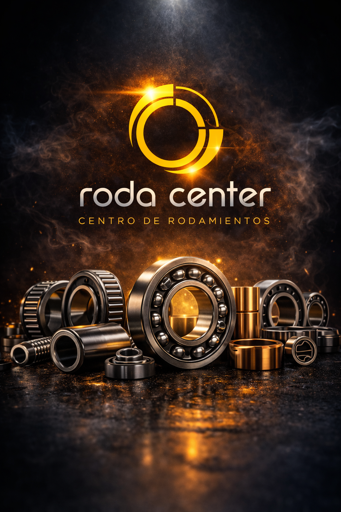
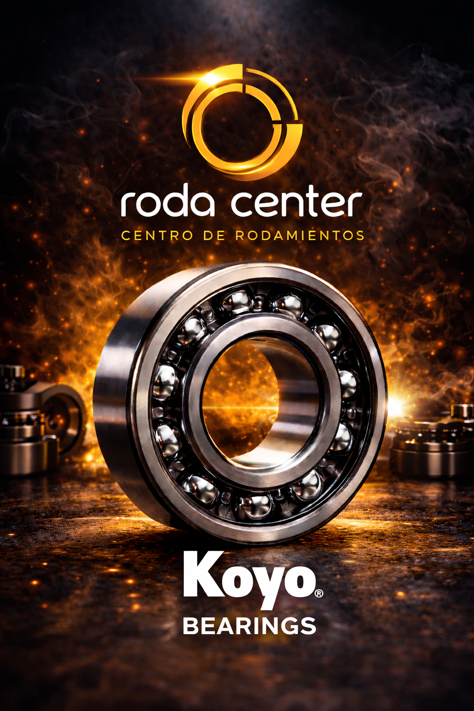
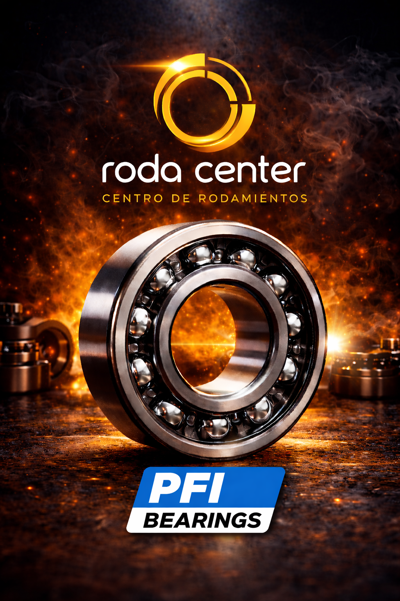
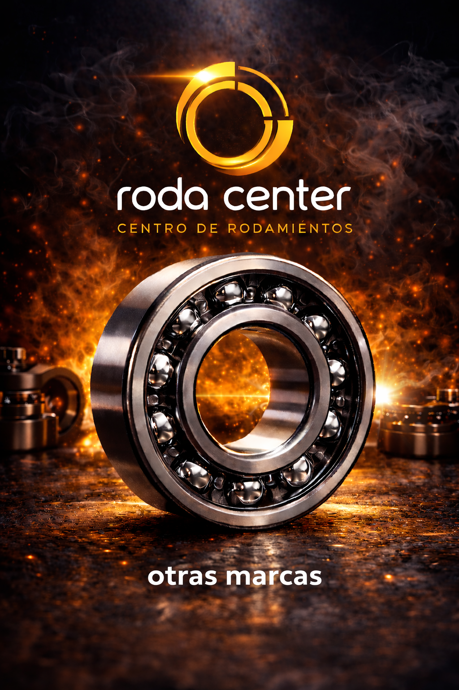

Ofrecemos rodamientos de excelente calidad y alto rendimiento, diseñados para soportar trabajo pesado, altas revoluciones y condiciones exigentes.
Trabajamos con marcas reconocidas como NTN, KOYO, PFI y otras marcas, garantizando durabilidad, precisión y desempeño óptimo.
Disponemos de balineras para todo tipo de vehículos: livianos, motos, maquinaria y vehículos pesados.
🔧 Asesoría personalizada para encontrar la referencia exacta que necesitas.
🛡️ Productos con garantía de calidad y respaldo confiable.
⚙️ ¿Necesitas un rodamiento?
👤 Consultar por WhatsApp